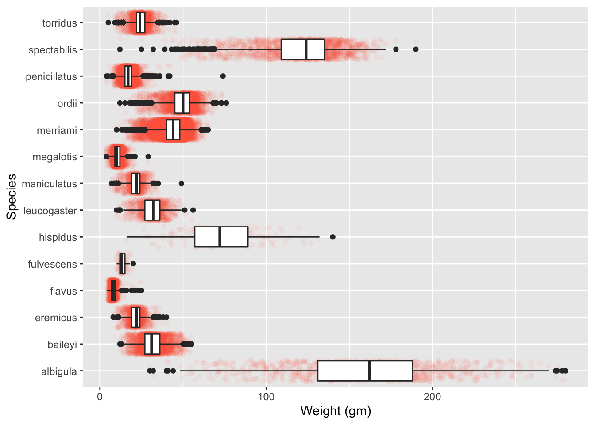

Lab 5: Factors in Visualizations
The inspiration for this lab comes from the plotting “best practices” that I’ve learned over the years. My main inspiration is Will Chase’s 2020 RStudio Conference Presentation – Glamour of Graphics (slides).
Fun fact! The inspiration for the presentation title came from Dr. Kelly Bodwin!
1 Revisiting Lab 2
Let’s start with the side-by-side boxplots you created in Week 2, to visualize the distribution of weight within each species (not species ID!).

As you should expect with a character variable, the boxplots go in alphabetical order. This looks rather jumbled, so let’s put our factor skills to work!
1. Reorder the boxplots so the weights go in descending order.
You are required to use functions from forcats to complete this task.
2. Now that you’ve reordered, look at your y-axis label. That’s long! Let’s take Will Chase’s advice and move the y-axis label to the top of the plot.
2 Time-Series Plot
This week, we focused on learning skills related to working with dates, but we have yet to make a very common type of plot – the time-series plot. We’ll use this plot to motivate a second type of factor reordering!
1. Create a visualization how weights vary for each genus over the duration of the study.
Alright, there are a lot of measurements over time! Let’s use our dplyr skills to summarize each year and plot the summaries.
2. Calculate and plot the mean weight for each year (for each genus).
This should look much less busy! However, you should notice that the legend still goes in alphabetical order.
3. Reorder the boxplots so the weights go in descending order.
You are required to use functions from forcats to complete this task.
4. Now that you’ve reordered, look at your legend’s label. That’s terrible! Let’s give the legend a new title and move the information from the y-axis to the plot title.
3 Caputures over the Week
For our final exploration, we will consider the number of rodents captured throughout the week – transitioning to visualizations of categorical variables.
1. Create a visualization of the number of rodents captured each day of the week.
As you might have expected, the ordering of the days of the week is not what we would like.
2. Change the order of the day of the week to go Monday through Sunday.
You can choose to keep the days named as they are (e.g., Mon, Sun), or you can choose to rename the days to their full names (e.g., Monday, Sunday).
Your plot should not make people tilt their heads to read it! Be mindful in choosing which variable goes on which axis and if / how you use axis labels.
It should be very clear that there are more rodents captured on the weekend than during the week. But, let’s explore if this is still the case if we use a “Weekday” / “Weekend” classification system instead.
3. Collapse Monday through Friday into a "Weekday" level, and collapse Saturday and Sunday into a "Weekend" level. Plot the number of rodents captured between the two groups.
Your plot should not make people tilt their heads to read it! Be mindful in choosing which variable goes on which axis and if / how you use axis labels.